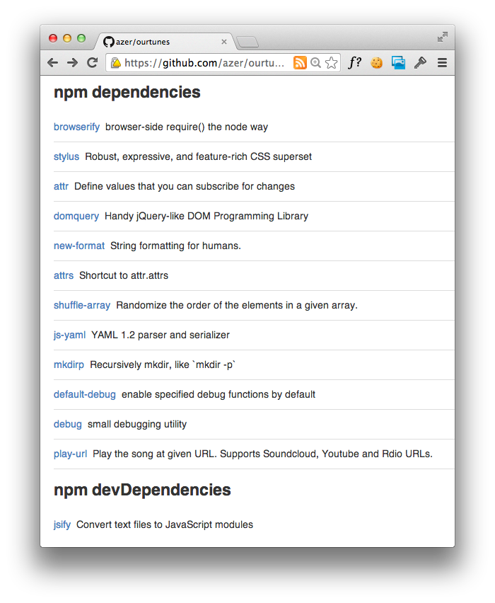

Find out what npm modules the cool kids are using.
npmhub is a browser extension that helps you discover new npm modules while browsing
github.com. It notices when you’re browsing a repo with a package.json in it. If there are any dependencies
or devDependencies listed therein, npmhub fetches each module’s metadata from the npm registry and
displays it right on the GitHub page, just below the README. Here’s an example:
